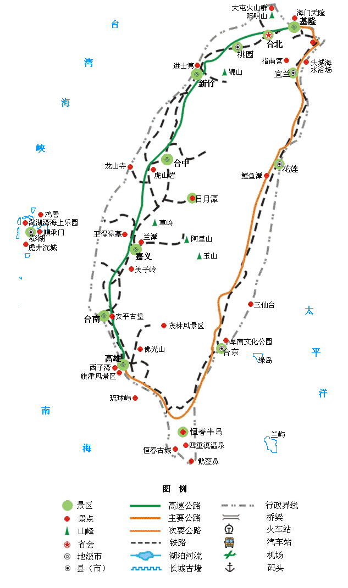

| | | | | |
| - | - | - | - | - |
|<b>别名</b>|福尔摩沙（Formosa）、宝岛、中华台北||<b>著名景点</b>|台北101、台北故宫、日月潭、阿里山、玉山、爱河、垦丁、太鲁阁|
|<b>行政区类别</b>|省级行政区||<b>机 场</b>|台湾桃园国际机场、高雄国际机场、台北松山机场、台中清泉岗机场|
|<b>所属地区</b>|中国华东||<b>火车站</b>|台北车站、高雄车站、台中车站、台南车站、花莲车站、桃园车站等|
|<b>下辖地区</b>|6“直辖市”、3市、13县||<b>车牌代码</b>|-|
|<b>电话区号</b>|+886||<b>GDP</b>|5295.5亿美元（2014年）国际汇率 |
|<b>邮政区码</b>|-||<b>人均GDP</b>|22598美元（2014年）国际汇率|
|<b>地理位置</b>|中国大陆东南沿海的大陆架上||<b>主要民族</b>|汉族、台湾原住民族（即高山族）|
|<b>面 积</b>|36192.8155平方千米||<b>主要宗教</b>|佛教、道教、基督新教、天主教等|
|<b>人 口</b>|2349.2074万（2015年底）||<b>货 币</b>|港元（HK$）|
|<b>方 言</b>|闽南语（台湾话）、客家语、福州话等汉语方言；南岛语系诸语言||<b>货币单位</b>|新台币（NTD，TWD）|
|<b>气候条件</b>|北回归线以北属亚热带季风气候，以南属热带季风气候 ||<b>地理最高点</b>|玉山主峰（海拔3952米）|
|-|-||<b>最长河流</b>|浊水溪（186.6千米）|
|-|-||<b>最大湖泊</b>|曾文水库（17.14平方千米）|
|-|-||<b>主要城市</b>|台北、高雄、新北、台中、台南等|
|-|-||<b>著名大学</b>|国立台湾大学、国立清华大学、国立交通大学、国立成功大学、国立政治大学|
| <b>台湾旅游攻略</b> | <b>台湾旅游必去景点</b> | <b>台湾旅游注意事项</b> | <b>港澳台</b> | <b>其它</b> |
| - | - | - | - | - |
| <a href="javascript:;" onclick="strategy(this);">台湾旅游攻略</a> | <a href="javascript:;" onclick="scene(this);">台北101</a> | <a href="javascript:;" onclick="notes(this);">台湾旅游注意事项</a> | <a href="javascript:;" onclick="tips(this);">港澳台旅游小贴士</a> | - |
| - | <a href="javascript:;" onclick="scene(this);">台北故宫</a> | - | <a href="introduce.html">港澳台简介</a> | - |
| - | <a href="javascript:;" onclick="scene(this);">日月潭</a> | - | <a href="permit.html">港澳台通行证</a> | - |
| - | <a href="javascript:;" onclick="scene(this);">阿里山</a> | - |-|-|
| - | <a href="javascript:;" onclick="scene(this);">西门町</a> | -|-|-|
| - | <a href="javascript:;" onclick="scene(this);">淡水</a> | -|-|-|
| - | <a href="javascript:;" onclick="scene(this);">九份</a> | -|-|-|
| - | <a href="javascript:;" onclick="scene(this);">垦丁</a> | -|-|-|
| - | <a href="javascript:;" onclick="scene(this);">野柳</a> | -|-|-|
| - | <a href="javascript:;" onclick="scene(this);">夜市</a> | -|-|-|
## <i class="fa fa-file-text-o"></i>&nbsp;目录（Table of Contents）
+ [I. 总路线图（暂无）](#one)
+ [II. 景点](#two)
+ [III. 路线规划（暂无）](#three)
<h2 id="two"><i class="fa fa-star-o"></i>&nbsp;景点</h2>
